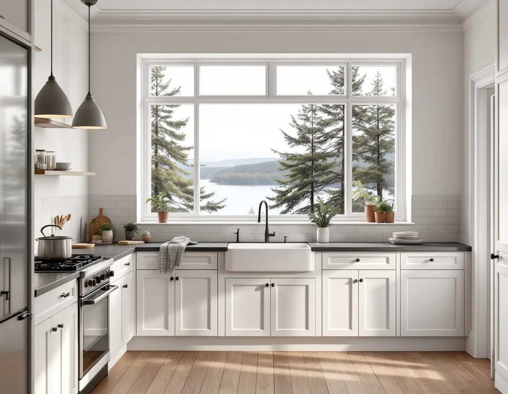
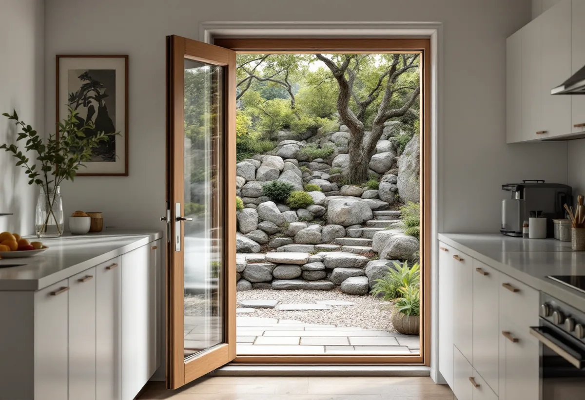

Besök på plats
Vi tittar på köket, installationerna i nedre plan och hur materialet kommer in och ut.

En köksrenovering på Lidingö kan gälla en villa från villastadens första år, ett souterränghus i Brevik eller ett radhus i Mölna.
Beskriv jobbet kort.
Något blev fel. Kontrollera uppgifterna eller ring 08 12 410 276.
Vi tittar på jobbet på plats innan du får offert.
Du ser vad som ingår och vad det kostar.
Vi drar av ROT direkt och sköter ansökan.
Geal Entreprenad AB, Bromma. Org.nr 559303-7566.

Ska köket bara bytas inne är reglerna enkla, men ska det få ett nytt fönster, en dörr mot trädgården eller byggas ut kan stadens utökade lovplikt avgöra. Vi går igenom huset, bygger köket och samordnar el och VVS – med gratis platsbesök.
Villabebyggelsen tog fart 1906, när AB Lidingö Villastad bildades. I slutet av 1910 fanns 293 villor, och kärnan i villastaden består i dag av hus från ungefär 1905–1930. Samma år som villastaden startade köptes Brevik, där det 1910 fanns 75 villor. Under 1940- och 50-talen styckades många stora tomter, och nya villor byggdes mellan de gamla.
Efterkrigstiden gav radhusen. Mölna radhusby ritades av Nils Tesch 1954 och byggdes 1960–62 med fyrtio radhuslägenheter i sju längor, och i västra Käppala tillkom närmare hundra radhus och kedjehus 1979. I en äldre villa har köket ofta flyttats eller byggts om flera gånger, medan radhusens kök från början var likadana i hela området.
Ön är kuperad, och flera av villorna i Brevik står i souterräng, med en våning delvis under mark på ena sidan. Ligger köket på entréplanet och avlopp och elcentral i nedre planet, innebär en ny plats för diskbänken nya ledningar ner genom bjälklaget – och det avgör i praktiken var köket kan hamna.
Branta tomter med stödmurar och terrasser påverkar också själva bygget. Materialet ska bäras in, och gamla skåp och rivningsmassor ska ut. Vi planerar det vid besöket, så att arbetet går smidigt och utan skador på trappor och entré.
En installation eller väsentlig ändring av vatten och avlopp eller ventilation i byggnaden kräver anmälan och startbesked, och detsamma gäller en ändring som väsentligt påverkar bärande delar. Det gäller oavsett var på Lidingö huset ligger.
Sedan 1 december 2025 krävs inte bygglov för fasadändringar på en- och tvåbostadshus utanför värdefulla områden, och tillbyggnader på upp till 30 kvadratmeter kan göras utan bygglov. Men Lidingö stad skriver att utökad lovplikt gäller för de flesta byggnadsåtgärder inom särskilt kulturhistoriskt värdefulla områden. I stadens webbkarta visas de som ett blått lager, och där krävs bygglov för till exempel tillbyggnad och fasadändring.
För köket betyder det att ett nytt fönster över diskbänken, en altandörr eller en köksutbyggnad kan behöva prövas om fastigheten är blåmarkerad. Är den gulmarkerad kan det finnas värden som behöver bedömas, och då hänvisar staden till sitt kundcenter. Staden påpekar också att lovfria åtgärder ska utföras varsamt med hänsyn till byggnadens och områdets karaktär.
Underlaget för de värdefulla områdena finns i kulturmiljöprogrammet, som kommunfullmäktige antog den 16 december 2024. För Mölna radhusby rekommenderar programmet att de slammade tegelfasaderna och kopparplåtsdetaljerna bevaras, vilket är bra att känna till innan ett köksfönster byts.
I en radhuslänga byggd på en gång har köken samma läge, och stammarna går på samma sätt i varje hus. Det gör planeringen förutsägbar. Husen i västra Käppala från 1979 hör till en tid då ventilation med både från- och tilluft blev vanligare, och då behöver köksfläkten väljas så att den passar husets system. Ändras ventilationen väsentligt krävs anmälan.
Ingår huset i en samfällighet eller förening kan det finnas egna regler för ändringar som syns utåt. Vi tar hänsyn till dem i förslaget. Mer om att planera köket finns under köksrenovering i Stockholm, och om husens tak hos takläggare på Lidingö.
Vi tittar på köket, installationerna i nedre plan och hur materialet kommer in och ut.
Vi kontrollerar stadens webbkarta och om fönster, dörrar eller utbyggnad kräver lov.
Du får ett skriftligt förslag med arbete och material var för sig.
Gamla skåp rivs, och rör, el och fläktanslutning dras enligt den nya planen.
Golv och väggar görs klara, stommen monteras och bänkskivan sätts på plats.
Vitvaror, blandare och belysning kopplas in och provas, och du får handlingarna.
Rotavdraget är 30 procent av arbetskostnaden, högst 50 000 kronor per person och år och högst 75 000 kronor tillsammans med rut. I villa och radhus räknar Skatteverket bland annat att byta köksluckor och dörrar, att installera och komplettera elcentraler och att montera fast köksinredning och installera vitvaror i samband med en omfattande renovering som rotarbete.
Att dra el i trädgården ger inget avdrag, och materialet ingår aldrig. Vi drar avdraget direkt på fakturan och sköter ansökan hos Skatteverket.
Var rören går och om diskbänken kan stå kvar avgör mycket, särskilt i souterränghus. Ett nytt fönster, en dörr eller en utbyggnad lägger till både arbete och eventuellt bygglov. Därefter styr inredning och vitvaror. Efter ett gratis platsbesök får du ett skriftligt kostnadsförslag.
Planering, el, VVS, fläkt och väggar.
Köksrenovering i Stockholm →Takbyte, takbesiktning och plåtarbeten.
Takläggare på Lidingö →Brevik, Mölna och Käppala.
Takrenovering på Lidingö →Potten, avloppet och kulturmiljöerna.
Attefallshus på Lidingö →Värdefulla hus, kulör och bidrag.
Fasadmålning på Lidingö →Villastäderna och Brevik på Lidingö.
Fönsterbyte på Lidingö →Fönster i utpekade kulturmiljöer.
Fönsterrenovering på Lidingö →Slipa och behandla trägolv i kök och hall.
Golvslipning på Lidingö →Plåt i vind och värdefulla miljöer.
Plåtslagare på Lidingö →Nytt material, k-märkning och byggnadsminnen.
Takbyte på Lidingö →Ny tapet med hänsyn till huset.
Tapetsering på Lidingö →Webbkartan, programmet och frivilligt lov.
Tillbyggnad på Lidingö →Behåll stommen, bygg om resten.
Totalrenovering på Lidingö →Eller ring 08 12 410 276, mån–fre 08–17.
Beskriv jobbet kort.
Något blev fel. Kontrollera uppgifterna eller ring 08 12 410 276.